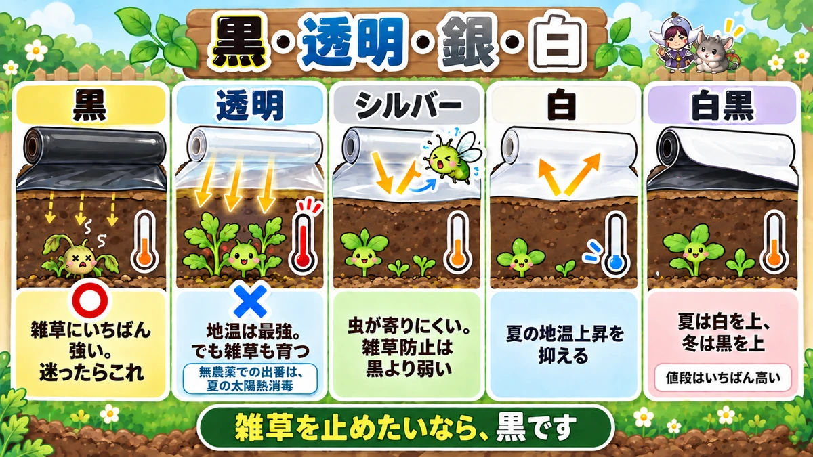
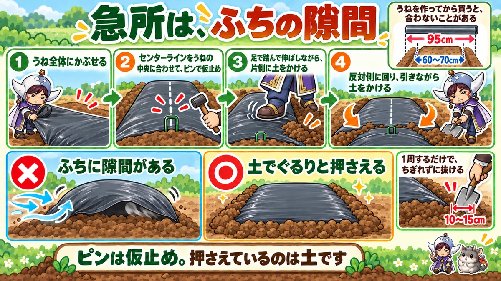
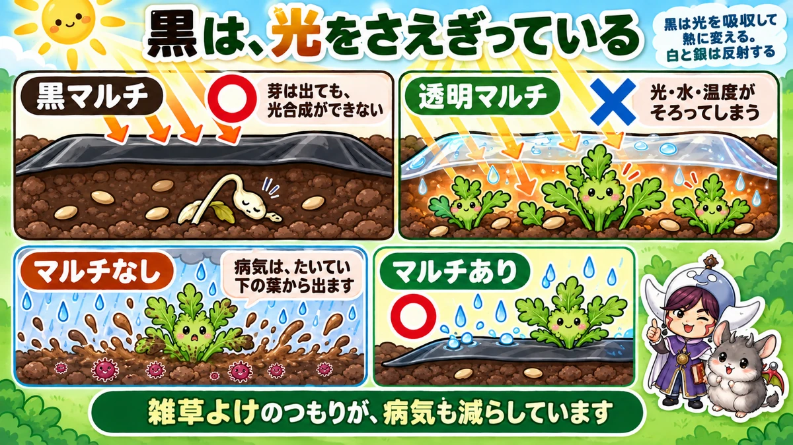

マルチは、色ごとに別の道具です🌱 透明を選ぶと草だらけになります

🌱「マルチを張ったのに、草が生えてきた」
🌱「風で飛ばされて、うねの上でめくれている」
🌱「買ってきたら、うねの幅に合わなかった」
どうも、8150（えいこう）です🌱 家庭菜園歴8年、理科の教員免許を持っていて、有機・無農薬で野菜を育てています。
前回はさつまいもでした。今日はマルチの話です。
これまでの記事で「黒マルチを張ってください」と何度も書いてきました。★今日はその中身をまとめます。
先に、この記事でいちばん言いたいことを言っておきますね。
★マルチは、色ごとに別の道具です。
そして★無農薬の畑で透明を選ぶと、草だらけになります🌱
マルチには、6つの効果があります
思っているより、働いています
マルチは「雑草よけ」だと思われがちです。★実際には6つ働いています。
- ★土の状態をそのまま保つ（雨で土が締まらない）
- ★乾燥を防ぐ。同時に、雨が入りすぎるのも防ぐ
- ★雑草を抑える
- ★地温の変化をやわらげる（暑さも寒さも）
- ★雨の泥はねを防ぐ（病気の予防になります）
- ★土の中で育つものを守る（じゃがいも・玉ねぎ）
泥はねの話は、あとで
このなかで、いちばん見落とされているのが★5番です。
これは記事の後半で、理科の話として詳しく書きます。
デメリットは、ひとつ
正直に書くと、欠点もあります。
★使い終わったポリのシートが、ごみになります。
これが気になる方は、★わら・枯れ草・もみ殻を敷く昔ながらの方法もあります。効果は同じ方向です。
★色で、役割がまったく違います

❶ 黒 … 迷ったらこれ
★いちばん一般的で、いちばん雑草に強いのが黒です。
私は★9割がた黒しか使っていません。
有機・無農薬でやるなら、★黒を基本にしてください。
❷ 透明 … 地温は最強、でも
★地温を上げる力は、透明がいちばんです。
「それなら冬は透明がいいのでは」と思いますよね。★ここが落とし穴です。
★透明は光を通します。だから雑草も、ぬくぬくと育ちます。
★除草剤を使う畑向けの資材なんですね。無農薬の畑で使うと、シートの下が草だらけになります。
透明の、正しい使いどころ
では無農薬では出番がないのか。★あります。
★夏の太陽熱消毒です。
真夏に土を湿らせて透明シートで密閉すると、★中が高温になって、病原菌や雑草のタネを弱らせます。
★9月中旬ごろまでは効果があります。空いた畑があるなら、やってみてください。
❸ シルバー … 虫よけ
表面がキラキラ光るタイプです。
★光を反射して、虫が寄りにくくなります。とくにアブラムシに効きます。
ただし★雑草を抑える力は黒より弱いです。虫の多い時期の葉物などに、部分的に使うのがいいと思います。
❹ 白 … 夏の暑さ対策
★白は、夏の地温上昇を抑えます。
真夏に植える野菜の根を守りたいときに使います。
★雑草防止はシルバーよりさらに弱いので、そこは割り切ってください。
❺ 白黒 … いいとこ取り
表が白、裏が黒のシートもあります。
★白い面で地温を抑えて、黒い面で雑草を止める。
★夏は白を上にして、冬は黒を上にする。1枚で両方できます。
★ただし値段はいちばん高いです。
まとめると
- ★雑草を止めたい → 黒
- ★地温を上げたい（除草剤を使わない） → 黒
- ★太陽熱消毒 → 透明
- ★アブラムシを減らしたい → シルバー
- ★真夏の暑さを抑えたい → 白か白黒
★うねの幅は、シートに合わせます

先に幅を知っておく
これは順番の話です。
★マルチの幅は95cmが標準です。
ということは、★うね幅を60〜70cmで作っておくと、ちょうどよく掛かります。
★うねを作ってから買いに行くと、合わないことがあります。私はこれで1回失敗しました😅
センターラインを、合わせる
シートには★真ん中に線が入っています。
★この線をうねの中央に合わせてから、仮止めしてください。
ここがずれると、片側だけ土をかける余裕がなくなります。
★ピンは、仮止めです
ここがいちばん誤解されているところです。
マルチ止めのピンを打って、★それで固定した気になってしまう。
★あれは仮止めです。押さえる主役は土です。
足で伸ばして、土をかける
手順はこうです。
- ★うね全体にシートをかぶせる
- ★センターラインを合わせて、ピンで仮止め
- ★足でシートを踏んで伸ばしながら、片側に土をかける
- ★反対側に回り、ピンと張るように引きながら土をかける
★片側だけ全部かけてしまわないでください。両側から中央へ、少しずつです。
★急所は、隙間です
張り方のポイントは、実はこれひとつです。
★周囲に隙間を作らない。
隙間があると、★そこから風が入って、凧のようにふくらんで飛びます。
うねのふちを、★土でぐるりと押さえてください。ここさえできていれば、多少ゆるくても飛びません。
穴のあけ方
植え穴は3通りです。
- ★マルチカッター（穴あけ器）で自分で開ける
- ★最初から穴が開いているシートを買う（15cm間隔のものなど）
- ★ミシン目入りで、好きな位置だけ破れるタイプを使う
★株間が決まっている野菜なら、穴あきを買うほうが早いです。
剥がし方にも、コツがあります
シーズンが終わったとき、★端から引っぱるとちぎれます。
土に埋まった部分が切れて、★畑に破片が残るんですね。これが本当に厄介です。
やり方はこうです。
★外周から10〜15cmのところに、スコップを入れて起こす。
これを1周するだけで、★ちぎれずにすっと抜けます。
学ぶ：黒は、光をさえぎっています🔬

なぜ黒だと、草が生えないのか
さきほどの「透明だと草が生える」という話に戻ります。
★なぜ色で差が出るのでしょう。
答えは、光合成です
雑草のタネも、★マルチの下で芽を出すことはあります。
温度も水分もあるからです。★でも、そこから育てません。
★光が届かないので、光合成ができないからです。
芽を出した分の養分を使いきって、★そのまま終わります。
透明だと、逆になります
透明のシートでは、光がそのまま入ります。
しかも★シートの下は暖かくて、湿っています。
★発芽の3条件が、これ以上ないくらい揃っています。
前に、タネまきの記事で★「水・空気・適温」の話をしました。透明マルチは、それを雑草に提供してしまうわけですね。
色と、熱の話
もうひとつ、地温の違いも説明できます。
- ★黒 … 光を吸収して、熱に変える
- ★白・銀 … 光を反射する
★同じ日差しでも、シートの色で地面が受け取る熱が変わります。
夏に白を使うのは、★日差しを跳ね返して土を冷やしておくためなんですね。
泥はねが、病気を運びます
最後に、さきほど後回しにした話をします。
★土の中には、病気のもとになる菌がいます。
雨が降ると、★雨粒が地面を叩いて、泥が跳ね上がります。
そして★その泥が、葉の裏につきます。
下の葉から病気が出る理由
思い出してください。★病気は、たいてい下の葉から出ますよね。
★地面に近いところほど、泥がかかるからです。
マルチは、★この跳ね返りを物理的に止めています。
「雑草よけ」だと思って張ったシートが、★実は病気も減らしている。私はこれを知ってから、マルチの見方が変わりました☺️
まとめ
ここまで読んでくださって、ありがとうございます！
- ★マルチの効果は6つ（土・乾燥・雑草・地温・泥はね・土中の保護）
- ★黒は雑草にいちばん強い。迷ったら黒
- ★透明は地温が最強だが、光を通すので雑草も育つ
- ★無農薬で透明を使うのは、夏の太陽熱消毒のとき
- ★太陽熱消毒は9月中旬ごろまで効く
- ★シルバーは光を反射して、アブラムシが寄りにくい
- ★白は夏の地温上昇を抑える
- ★白黒は夏に白を上、冬に黒を上
- ★マルチ幅は95cmが標準
- ★だからうね幅は60〜70cmで作る
- ★センターラインをうねの中央に合わせる
- ★ピンは仮止め。押さえるのは土
- ★足で伸ばしながら、両側から中央へ土をかける
- ★急所は「周囲に隙間を作らない」
- ★剥がすときは外周10〜15cmにスコップを入れる
- ★黒で草が生えないのは、光合成ができないから
- ★泥はねを止めることで、病気も減っている
全部やろうとしなくて大丈夫です。まずは★次に張るとき、ふちに隙間がないか一周見てください。それだけで飛ばなくなります🌱
次回は、しそ（大葉）の話です。★一度植えると、翌年から勝手に生えてくる理由をお話しします🌿
黒マルチ
いちばん使うのがこれです。草を抑えて、地温を上げて、乾燥も防ぎます。


シルバーマルチ
夏用です。光を反射するので地温が上がりすぎず、アブラムシも寄りにくくなります。
![[商品価格に関しましては、リンクが作成された時点と現時点で情報が変更されている場合がございます。]](https://hbb.afl.rakuten.co.jp/hgb/55e77bb2.a973bab2.55e77bb3.28befe28/?me_id=1223148&item_id=10001699&pc=https%3A%2F%2Fthumbnail.image.rakuten.co.jp%2F%400_mall%2Fideshokai%2Fcabinet%2Fam425.jpg%3F_ex%3D240x240&s=240x240&t=picttext "[商品価格に関しましては、リンクが作成された時点と現時点で情報が変更されている場合がございます。]")
透明マルチ
地温を最も上げます。ただし草も生えるので、太陽熱消毒と組み合わせて使います。
![[商品価格に関しましては、リンクが作成された時点と現時点で情報が変更されている場合がございます。]](https://hbb.afl.rakuten.co.jp/hgb/5676ec31.2582035e.5676ec32.c4887243/?me_id=1296241&item_id=10004946&pc=https%3A%2F%2Fthumbnail.image.rakuten.co.jp%2F%400_mall%2Fotentosan%2Fcabinet%2Fimg%2Fgoods02%2Fmulti%2Ftoumei-multi_pb.jpg%3F_ex%3D240x240&s=240x240&t=picttext "[商品価格に関しましては、リンクが作成された時点と現時点で情報が変更されている場合がございます。]")
マルチ押さえ
裾が浮くと風で全部めくれます。ケチらずに多めに打つのがコツです。